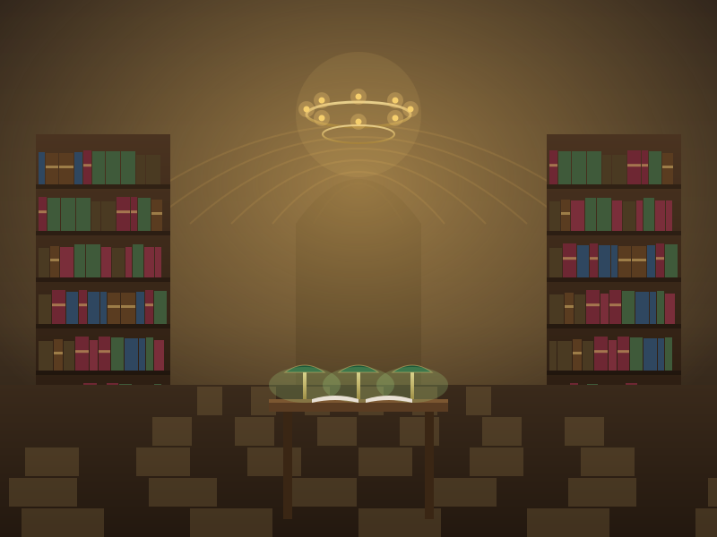
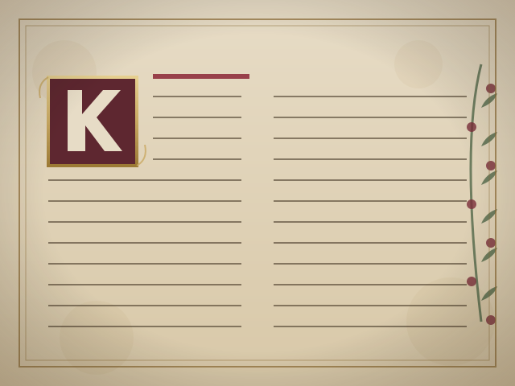
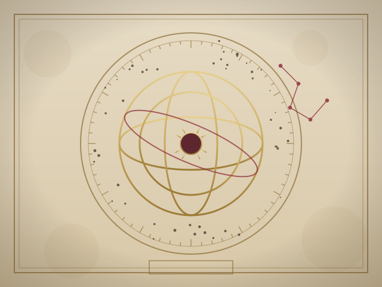
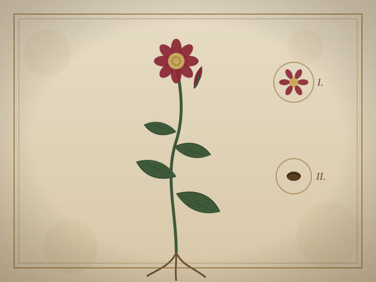

I
Antiquity & Letters
First folios, illuminated psalters, and the correspondence of people long since marble busts. Read under cotton gloves.
Browse the WingBehind a brass door on a quiet street, the Athenæum keeps its lamps lit after midnight. Here, members read by candle and counsel, among forty thousand leather-bound volumes and the long silence that good study requires.
Let it be known to all who pass beneath our lintel that this house was raised for a single, stubborn purpose: that difficult books might be read slowly, in good light, by people who mean to finish them. We hold that a library is not a warehouse but an instrument — tuned, kept, and played with care across generations.
To that end the Athenæum binds every acquisition in calf and crimson, gilds its spines by hand, and shelves nothing it would not itself read twice. Our brass is polished each dawn; our lamps are trimmed each dusk; our silence is enforced with a courtesy older than the building. Admission is by recommendation, and once given, it does not lapse.
We make no apology for our pace. The world hurries; we annotate. Where it skims, we sit. And when at last a member closes a volume here, the marginalia they leave become the inheritance of the next reader to draw that book from the shelf.
Aldous V. HartwellKeeper of the Collections · Anno MMXXVI
Each wing of the house is given to a single field of study, with its own keeper, its own ladder, and its own particular smell of old paper.
First folios, illuminated psalters, and the correspondence of people long since marble busts. Read under cotton gloves.
Browse the WingStar atlases, armillary plates, and the long argument between the astronomers. The ceiling here is painted with constellations.
Browse the WingHand-coloured plates of every flowering thing, pressed specimens, and the gardener's ledgers. It is the most fragrant room.
Browse the WingStatute, precedent, and the founding charter of the house itself, kept behind glass and a quietly disapproving clerk.
Browse the WingBanned, burned, and bewildering volumes that survived by being hidden. Consulted by appointment, and never reshelved by night.
Browse the WingSea charts, celestial globes, and maps of places that turned out not to exist. The drawers are deep and the paper is enormous.
Browse the Wing
Raised in the year MDCCCXXIV from the bequest of a retired sea-captain who could not bear to part with his charts, the Athenæum has burned its lamps every night since. War shuttered its doors for precisely one afternoon; nothing else has closed it.
Oak galleries, rolling ladders, and reading desks angled for the eye — every fitting chosen for the reader, never the architect.
Spines are re-gilded, hinges re-sewn, and foxed pages stabilised in our own bindery, the way it was done two centuries ago.
The reserve rooms keep the longest hours in the city. Difficult books, we find, are best met when the rest of the world is asleep.
A member's first year follows an old, unhurried progression — four terms, each opening one further set of brass doors.
Admission, the keeper's tour, and your name entered by hand into the great ledger. You are taught how to hold a folio and how to keep the silence.
Free run of six wings, a private desk with a green lamp, and the right to call any volume up from the catalogue before dawn.
You earn the privilege of annotation — a numbered pencil and the standing to leave notes that the next reader will inherit.
The deepest doors. By recommendation of two Fellows, the difficult and hidden collections are opened to you, by appointment and candle.
Subscriptions are annual, paid in advance, and renewable for life. The Fellowship is, by long tradition, our most coveted seal.
For the curious visitor.
Most coveted · the full house.
For those who endow the lamps.
I came for an afternoon and have not properly left in eleven years. The green lamps, the gilt, the absolute hush — no other room in the city lets me think to the bottom of a page.

The Reserve is the finest room I have ever been refused entry to, and then, at last, allowed into. They make you earn the difficult books. They are quite right to.

Notes from the bindery, the catalogue, and the small discoveries that fall out of old books when you least expect them.
Three months at the sewing frame, a great deal of wheat starch, and the quiet return of a book we nearly lost.
A cartographer's error, faithfully copied for a century — and what it tells us about how knowledge actually travels.

Tucked into a gardening ledger, still faintly coloured. We have given it a drawer of its own and a Roman numeral.
Leave word at the desk and the Keeper will write to you with a date for your reading afternoon. No obligation is incurred until you have sat in the silence yourself.